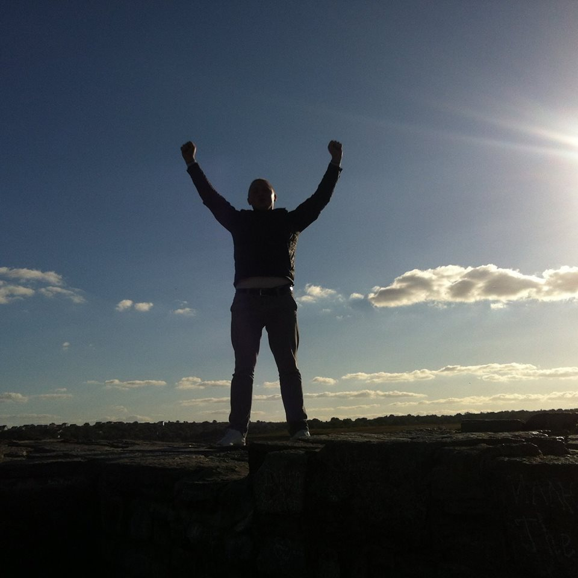

Petriv Nazar - Student of SoftServe IT Academy
Hello, my name is Petriv Nazar. I'am Student of SoftServe IT Academy. I have studied programming at the university.
I was involved in developing a program for a Ukrainian company. In order to broad my knowledge I have decided
to study frontend, because this direction is very interesting and promising. I love traveling, active recreation like a
surfing and snowboarding. Learn the history and mentality of the countries which I have visited. I also like to read
books, taste country specific dishes and get new impressions from new acquaintanceships.
Events
Last places I visited:
Sicily - a wonderful island of Italy which is washed by three seas. Met us with warm weather. Given the incredible
impressions especially impressed by the traffic on the roads ....
Amsterdam is the capital of the Netherlands.For many people, Amsterdam is associated with drugs, with red streets
or brylants. For me, this city is associated with museums channels and flowers. It is not possible to convey the words
of stay in this country. You need to go there ...
Barcelona is the capital of Catalonia. An incredible city with sea flavors, spices, wines, seafood and hamon. A huge city
with a unique Gaudi architecture ...
Slovenia is a neighboring country with beautiful ski resorts. The Carpathian mountains in this country are incredible.
The highways will not leave indifferent even the fans ...
Contacte me
drope me a line right now
Your name :
Your Adress :
Your Message :